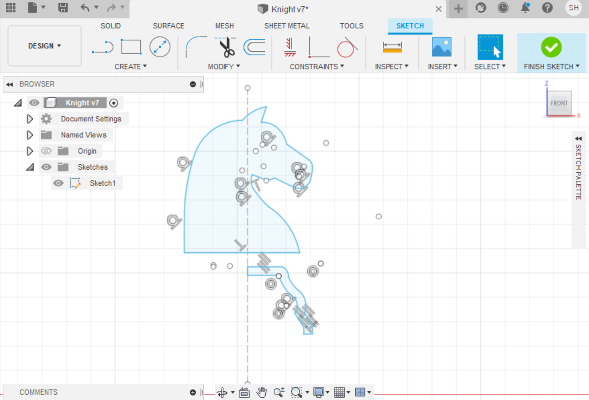
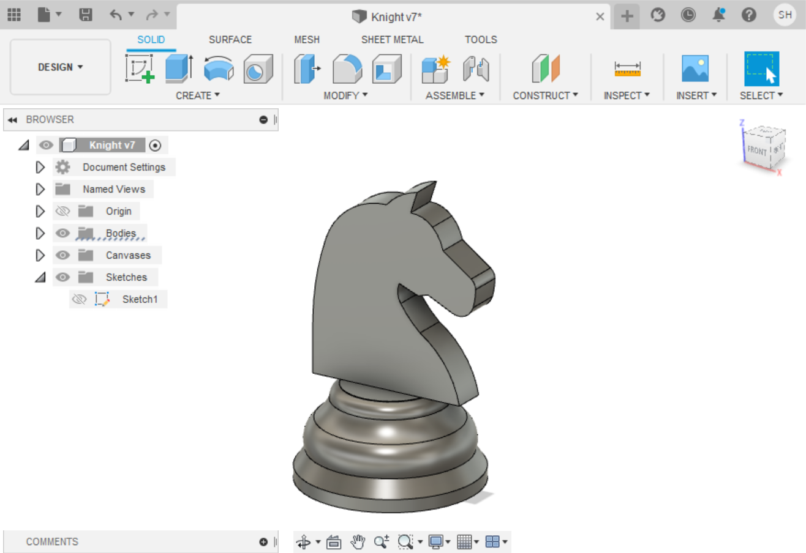

Fusion 360 is a CAD software platform for product design and manufacturing.It helps us to learn how to design and manufacture a product which ensures aesthetics, form, fit and fuction.
Here on this page,I going to show you what I have learned on fusion 360 which I did a exercise on making a knight chess piece.
In order to get the design of the knight head.First,we have to find a image of the knight, save it and import to fusion 360.

After importing the image inside fusion 360,begin by creating new sketch and trace the image
This is how it will look like and also I added a construction line the middle of the knight. It's because I am going to need it to revolve the base of the knight.
Once that done, I process to extrude the head of the knight to 5mm thickness,then I revolve the base and join them together
This is how the final product of the knight chess piece look like.
